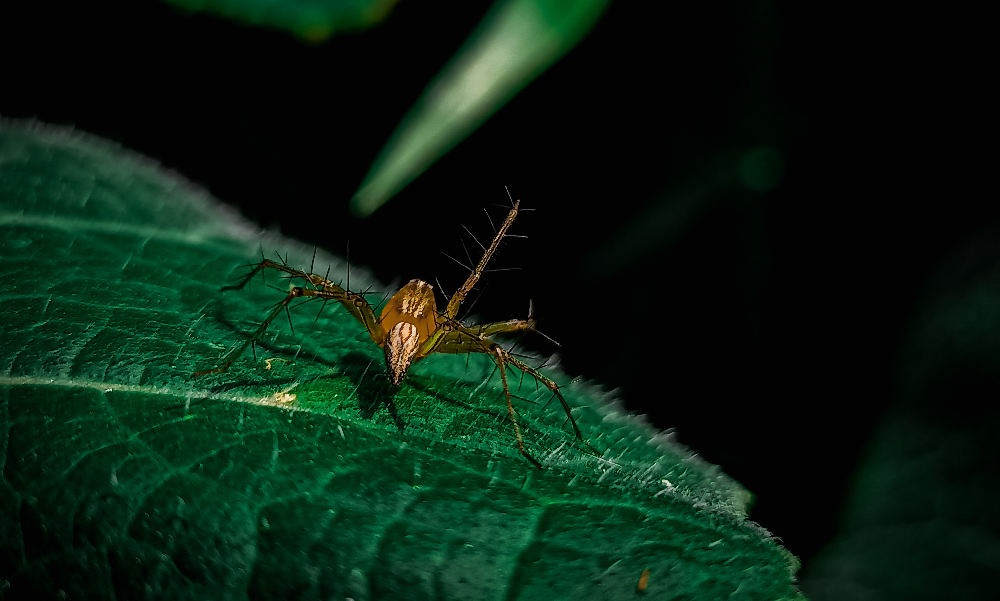
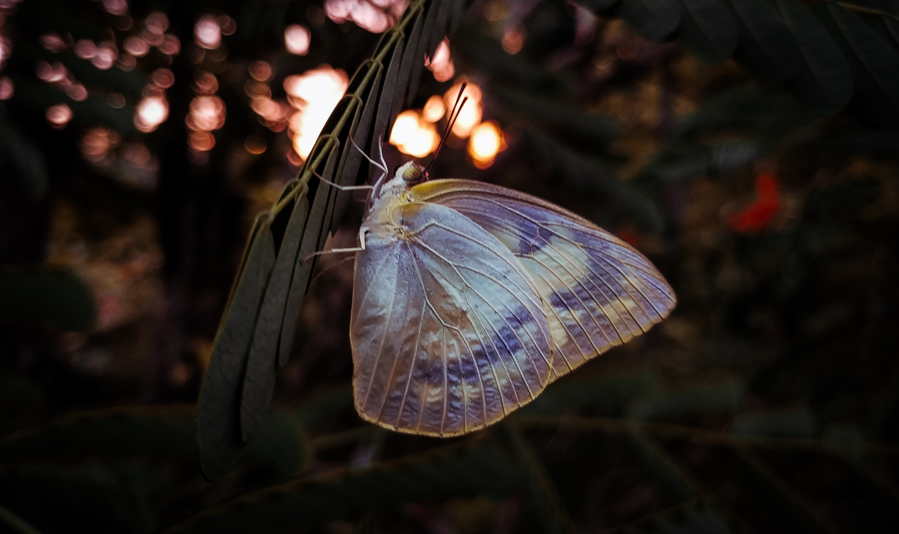
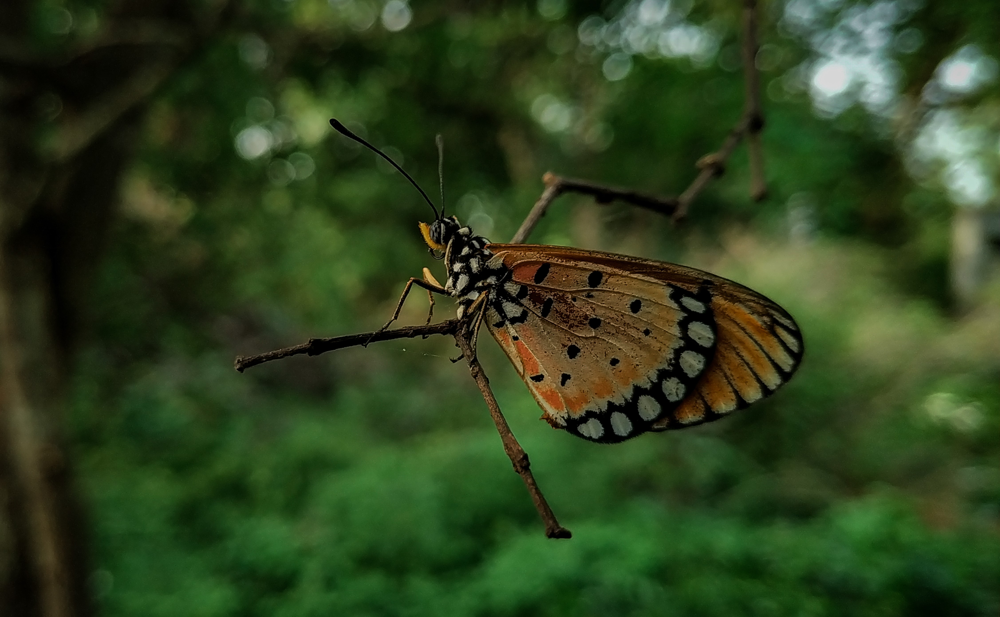
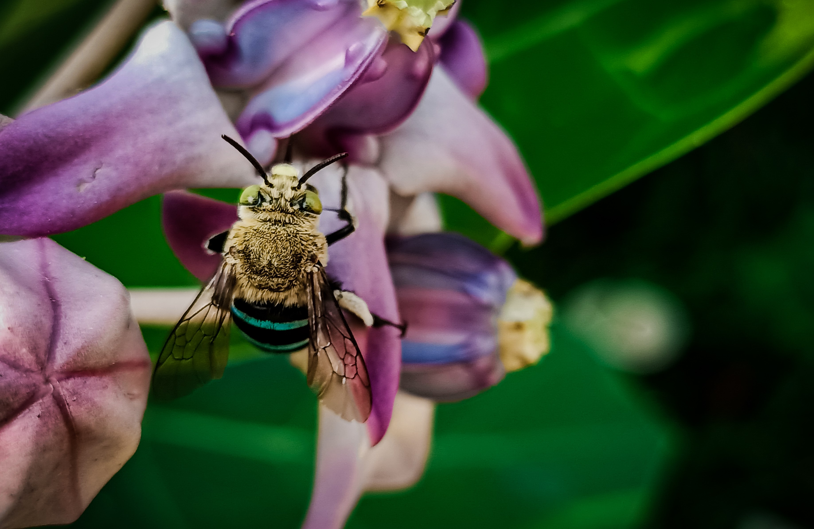
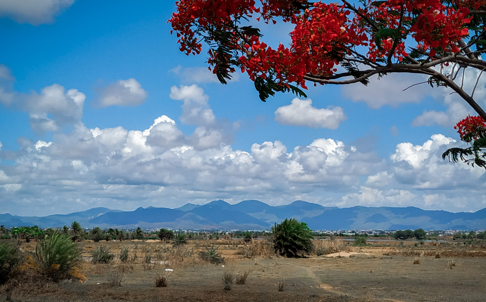
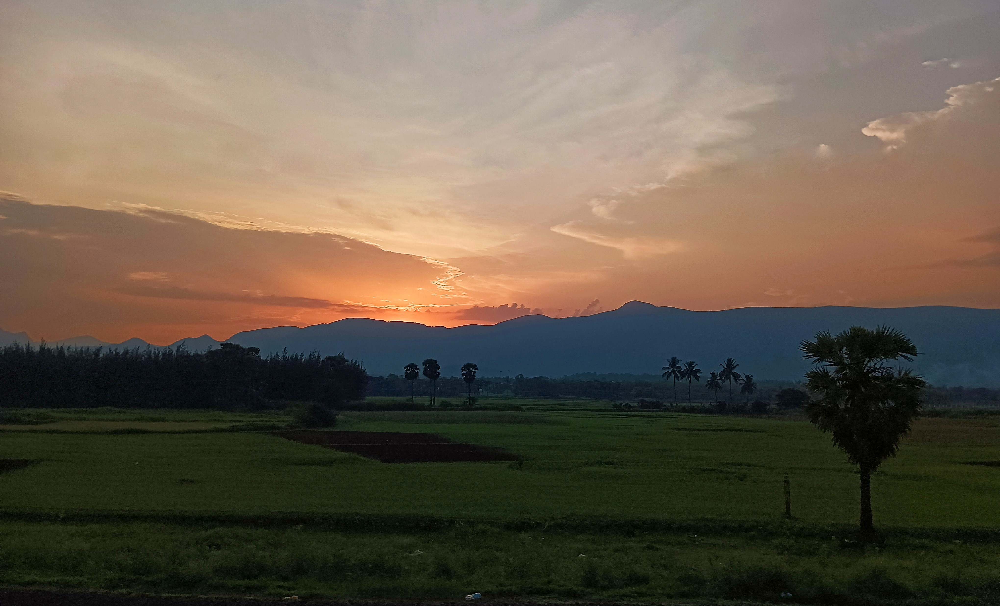
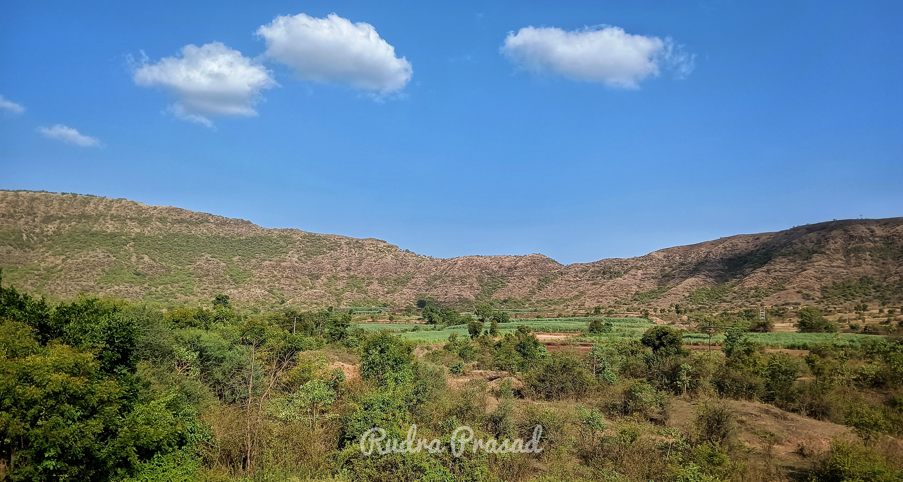

MY WORKS
AULACOPHORA
Aulacophora insect(Aulacophora is a genus of beetles in the family Chrysomelidae)commonly known as pumpkin beetles: some species are pests of agricultural crops. The genus was named in 1836 by th French entomologist Louis Alxandre Auguste Chevrolat

STRIPED LYNX SPIDER
Oxyopes salticus is a species of lynx spider, commonly known as the striped lynx spider, first described by Hentz in 1845. Its habitat tends to be grasses and leafy vegetation; grassy, weedy fields, and row crops

WINTER DAFFODIL
Sternbergia lutea often called Winter Daffodil, Fall Daffodil, Lillies-of-the-Field, or Yellow Autumn Crocus, It is a rare member of the Amaryllis familly

APPIAS DRUSILLA
Appias drusilla, the Florida white or tropical white, is a butterfly in the family Pieridae. It is found in tropical America, Florida and the Florida Keys and Antilles. It frequently visits coastal Texas. The habitat consists of tropical lowland evergreen or semideciduous forests

ACAEA TERPSICORE
Acraea terpsicore, the tawny coster,[1] is a small, 53–64 millimetres (2.1–2.5 in), leathery-winged butterfly common in grassland and scrub habitats. It belongs to the Nymphalidae or brush-footed butterfly family. It has a weak fluttery flight. It is avoided by most insect predators. This species and the yellow coster (Acraea issoria) are the only two Indian representatives of the predominantly African tribe Acraeini.[2] It is found in India, Sri Lanka, Maldives to Myanmar, Thailand, Laos, Cambodia, Vietnam, Bangladesh, Singapore, and recently Australia

BLUE BANDED NATIVE BEE
Blue banded native bee, cingulata has a very striking appearance similar to several other species of Amegilla. Unlike honey bees, it has pale opalescent blue stripes on its abdomen. The male can be distinguished by the number of complete bands, having five as opposed to the females' four

FIRST BIKE RIDE WITH NATURE
This photo was taken on the first bike ride after pandamic in 2021. On the way I found the mountains and clouds very clear that they never was. I was the witness of Gods best creation and time

EVENING ON A TRAIN
As a mobile Photographer I am always ready with my phone in the nature. It was a sunny afternoon I was traveling on a train and as always I was enjoying the nature through the window and I slept. And suddenly I wokeup and lost in this: the scattered rays on the grass, the sky. Everything was just perfect for that moment

Greens and browns
This is one of the unexpected capture while travelling to home. I was on a train for 30hours sleepy, bored, exhaused came to wash my face and as soon as I reach at the gate I noticed this beautiful place and I just ran after this shot. I can never forget the way I just got energetic after see this